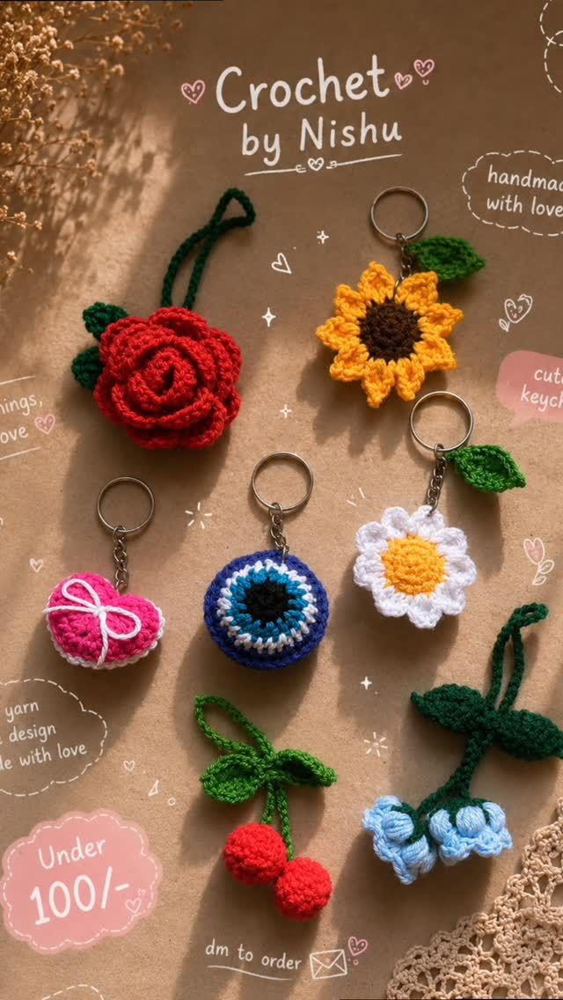
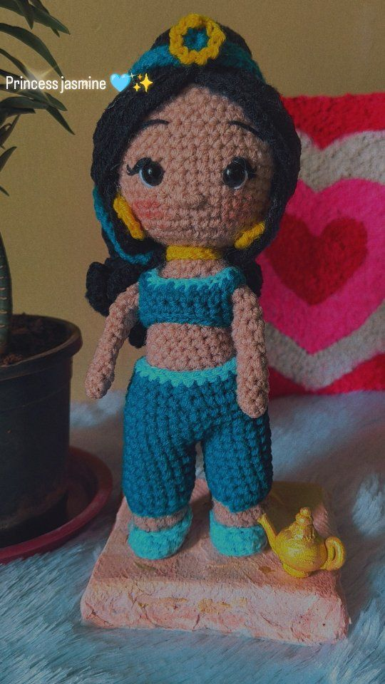
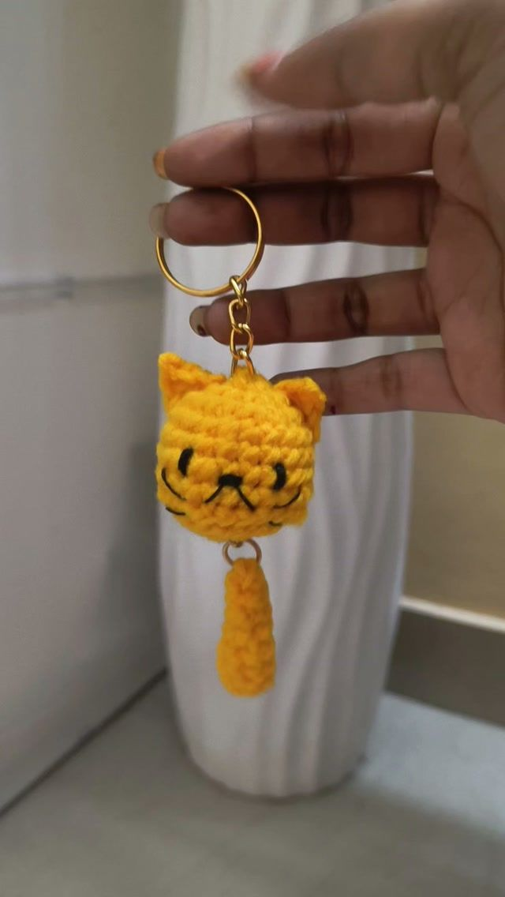
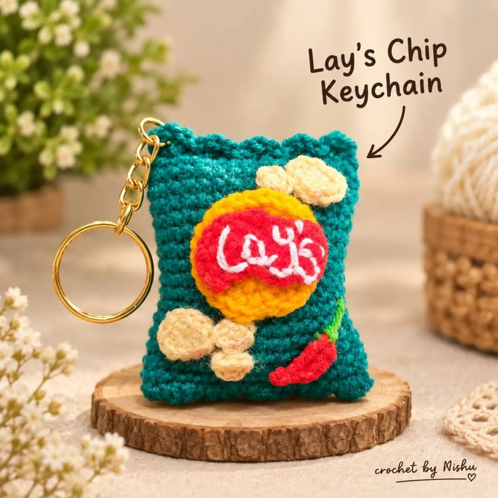

Crochet toys & dolls
Soft, hand-stitched characters that make a sweet gift or keepsake.
Handmade crochet goods, stitched one loop at a time.
@crochet_by_nishu_ · Orders online


Crochet by Nishu makes cheerful handmade pieces: little toys and dolls, everlasting flowers, bags and quirky keychains. Every piece is crocheted by hand, so each one carries a bit of character of its own. To order, just send a DM on Instagram.
Soft, hand-stitched characters that make a sweet gift or keepsake.
Blooms that never wilt, made stitch by stitch.
Handmade crochet bags with a personal touch.
Fun little crochet charms for your keys or bag.



Some photos are representative stock images.
Browse the collection here or on Instagram.
Share the piece, size or idea you have in mind.
Agree on design, price and timing directly.